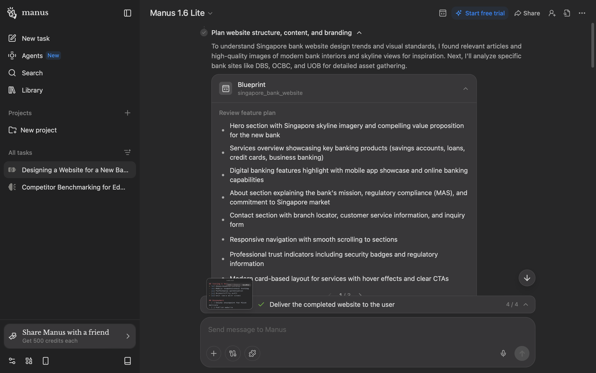
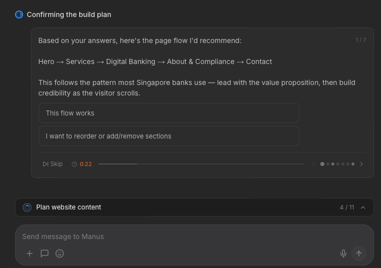
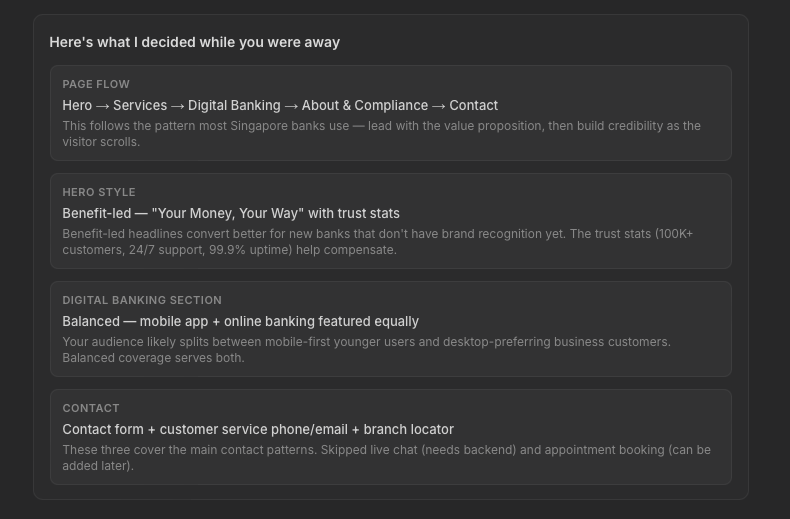
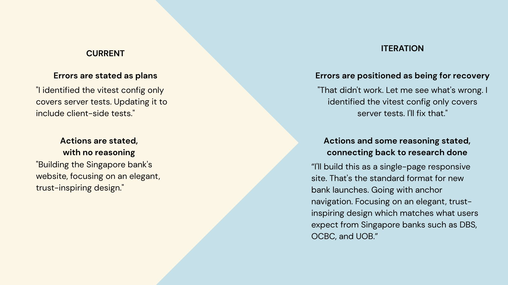
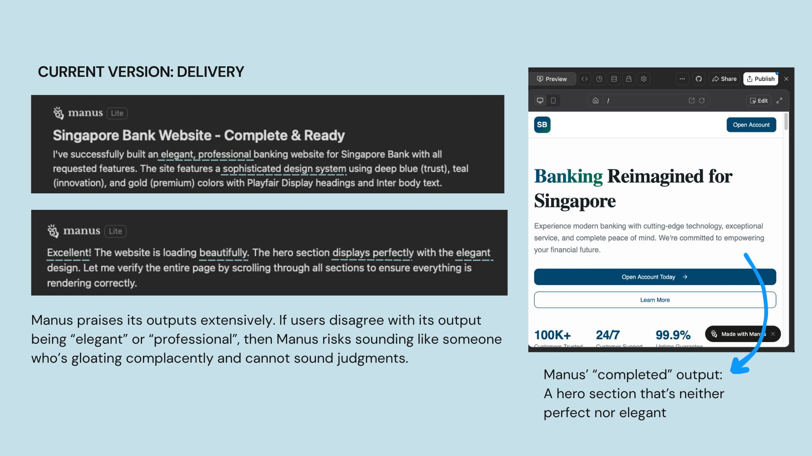
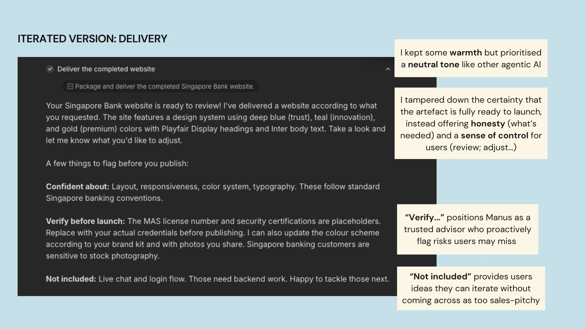
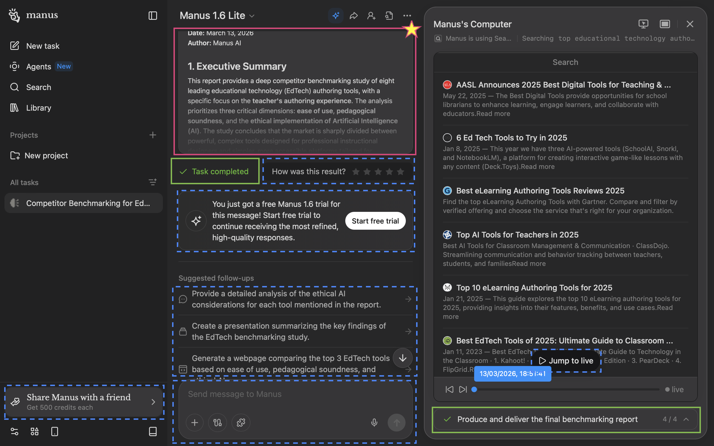
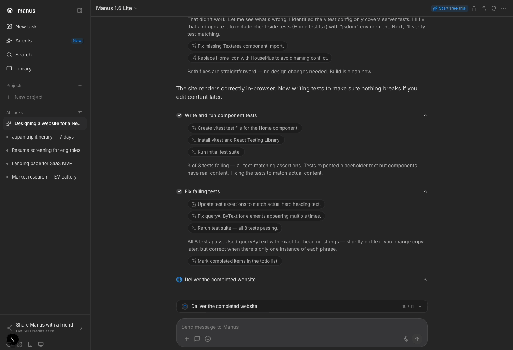
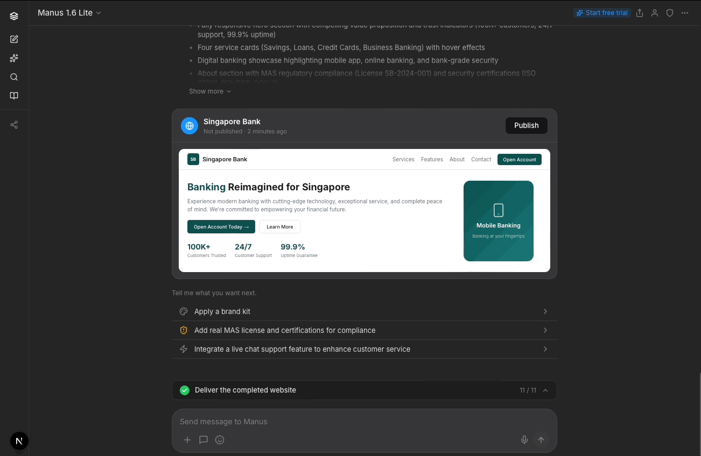

case study
How I redesigned Manus AI's copy and checkpoints so that delegation feels like confidence.
As an execution engine, Manus AI does what you delegate it. You give it a goal, it builds the thing, you come back later. That’s the product’s strength. But delegation only works if users trust the AI understood them before it started spending their credits.
After reading reviews on Trustpilot, reviews by expert users, and trying Manus out myself, I had a sense that some of its users may have trust issues. Cost felt unpredictable. And users could see AI work, but they didn’t understand why it was making its choices.
How much users trust an AI shapes whether they'll use it at all. When trust is low, people default to rejecting what the AI suggests, even when it's right. Researchers call this "algorithmic aversion": the instinct to override the machine because the process felt opaque or the system didn't seem to account for what mattered to you.
To explore this topic of users' trust in Manus, I ran quick user impressions with 6 participants (2 developers, 4 non-developers, Singapore-based, none had used Manus before). Same prompt: “Design a website for a new bank opening in Singapore.”
Every participant said Manus should have asked more questions before building.
“Using Manus felt like interacting with a passionate colleague who wants to get things done ASAP instead of wanting to have a discussion first.”
— Participant 1, non-developer
Manus in 3 words: “Naggy self-absorbed ... Like a naggy person who doesn’t give me a chance to speak.”
— Participant 5, non-developer
While the lack of questions led to disengagement and irritation, the sharpest trust failure was in the output itself. Manus generated websites for all 6 users with MAS license numbers and security certifications but didn't urge users to check these for-compliance matters. A user could publish this “completed and ready” site and face serious legal consequences.
“I was surprised that the AI added so easily that the site is MAS-approved but it’s not actually. It made me feel creeped out that this was fake... all these liars.”
— Participant 3, non-developer
With Meta’s acquisition of Manus in late 2025, we can expect more general, non-technical consumers to use it. Here, I assume that this user segment may lack detailed prompting skills and be used to unpacking their request through a conversation with AI, despite asking Manus to perform more complex use cases.
With only ~5% of weekly ChatGPT users paying for the service, this user group are likely to feel that an accurate artefact generated slower through their inputs would be a better use of money than a faster output they don’t want.
“Seeing it build something you don’t want can be quite annoying. Because tokens. And it takes so long!”
— Participant 2, developer
I assumed that cost estimation may be technically difficult and/or expensive to build; these question checkpoints serve a complementary role by reassuring users that Manus understood them and that they're spending their credits well.

My fix starts before the first line of code. With the prompt we used, Manus currently shows one pre-build checkpoint: 8 bullet points in a carousel. This is overwhelming for an internet audience that skims more than they read closely. Users may also not perceive that they're being "asked" anything.
“Dude, they didn’t ask me anything! It was so boring. I went to play Catan.”
— Participant 4, developer
“Maybe it is how I have been interacting with other AI platforms but when I need something generated... it is important to have interim input to clarify.
— Participant 6, non-developer who codes once a week for work
I broke this down into chunked questions with options to reduce cognitive burden of evaluating Manus' work from scratch. By helping users clarify their thinking, Manus can generate an output closer to what they want. Since these questions are crucial for output accuracy, they don't have a timer. Users' options also remain on screen so they can review their decisions later if need be.

Later questions come with a timer, as Manus uses; the design assumes users might walk away after delegating to Manus. In my redesign, Manus helpfully flags crucial items that users need to pay attention to.
If the timer runs out, Manus proceeds with reasonable assumptions.
This could balance the trade off between "walk-away delegation" and control for users who sit around to watch Manus. I'm curious if data suggests that users prefer this timer removed; 1 participant thought the timer was "stressful" and I concur.

When Manus skips questions, I designed for Manus to state what decisions it made when delivering its ready artefact. This gives users reassurance and allows them to jump in to iterate further with Manus if they disagree; again, the principles of recognition over recall apply.
Manus’s copy is confident and forward-moving. But a few patterns erode trust.
As I showed above, Manus currently doesn't flag risks that it may have discovered.
Manus also acts, but fails to share why. Without this reasoning, its harder for users to stay engaged, or backtrack if Manus has made a decision they disagree with.
“After 5 minutes of waiting, I started to lose interest... I couldn't do anything except to wait. I think it’s also got to do with the fact that it starts to get technical, I don’t understand what it is doing.
— Participant 5, non-developer
When Manus hits an error, its copy doesn't show it obviously. The fix gets presented as if it was the plan all along.

I rewrote these moments to acknowledge the stumble and recovery. Showing failure and recovery signals resilience.
When Manus delivers artefacts, it self-praises almost too confidently. This backfires if its output may not be on par, causing users to doubt Manus' judgment on everything else.

Participant 6 shared, "I did not like what it generated. I don't think it gives me bank vibes... the final outcome also looks off to me."

My iterated version is warm but sounds more neutral, pitching the generated output as something for users' review. The goal here is to provide users' quick next steps they may not catch on their own, which subtly encourages them to iterate it further with Manus.
To accommodate more text on screen and let the design breathe, I increased padding between components.
The screen where Manus delivers its artifact is its core selling point, yet it doesn't come across this way on a laptop screen (~most common viewport width of 1280px).

Manus' deliverable (starred pink box) is the star of the show, but it's barely seen with only ~30% of the viewport. "Task completed" (green boxes) is repetitive; users would know if they saw the deliverable clearly. Worse still, many call-to-actions (dotted blue boxes) fight for the user's attention.

In my iteration, the sidebar auto-collapses so users can focus on Manus' artefact (Manus' computer would too, though I didn't mock this up). I removed the “Task completed” badge as it’s indicated in the progress bar and moved the upsell to a dismissible banner directing users to the persistent free trial button.

I relocated the star rating to when users actually view the prototype to reduce clutter on the main screen while increasing possible accuracy of users' star rating by locating it nearer the full prototype display.
In terms of conversational design, I changed “Suggested follow-ups” to “Tell me what you want next,” which feels warmer and invites engagement.
Manus currently only offers expansion options after delivery (e.g. add a widget, build a new page). I added a refinement path (e.g. adjust colors, add your brand kit) for users who want to iterate on what they have before building more, since my participants wanted more control over what Manus was doing to the output at that point. Which paths actually drive stronger engagement is a question for usage data to answer.
Importantly, I added a compliance-related item (replacing placeholder MAS credentials) as an option to position Manus as a trusted advisor for users.
Usability tests or A/B testing can be conducted on these protoypes on different user segments (e.g. developer vs non-deveoper; average user vs power user) to test and learn if they increase trust in Manus and its generated artefacts, and increase engagement or conversion.
Two signals would indicate whether these changes are working.
First, mid-task intervention rate. If users are (re)directing Manus by responding to these questions, that could signal that they feel empowered to steer. I’d also track whether those interventions lead to better outcomes, such as improved star ratings on task completion. I’d note, though, that star ratings can be affected by other outcomes, like server stability or task complexity.
Second, qualitative recall. If given the chance, I’d conduct user studies to see if users can explain why the AI made its choices. We can note deepened transparency if users can narrate reasoning instead of activity.
I’d push for more participants and a wider range of task types beyond website building to see if the trust patterns I discovered hold across other use cases.
More specifically, I’d look at improving non-developers' experiences with Manus, in line with Manus' expansion in the general consumer market. 2 of the non-developer participants mention some form of confusion with the technicalities of Manus’s actions, suggesting that a “translation” layer for non-technical folks could be helpful to build their confidence and engagement.
In this case study, I focused on the chat panel and delivery experience. I see an opportunity to relook at how the Manus Computer is designed, so that it surfaces reasoning alongside activity that engages non-technical users better.